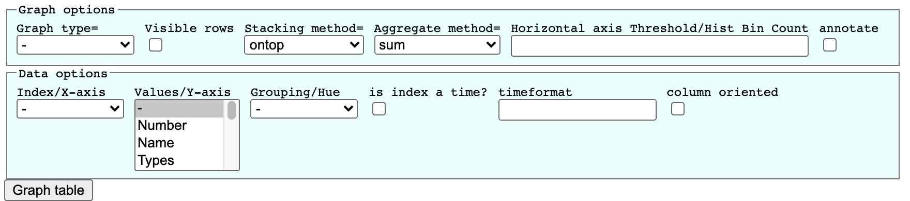
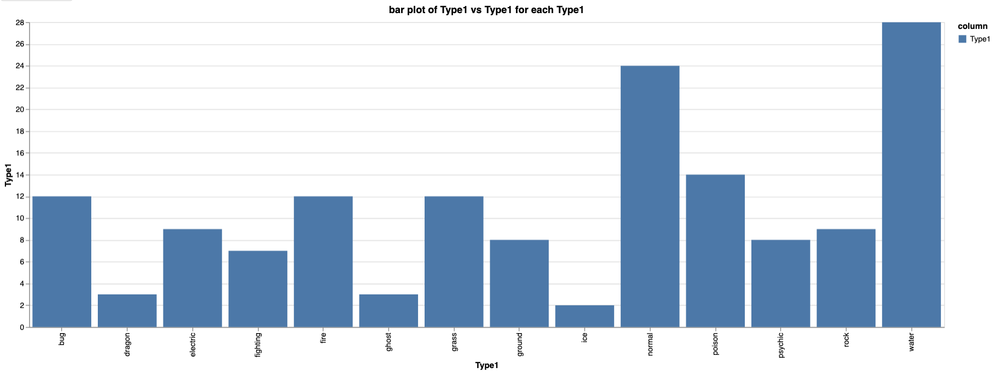
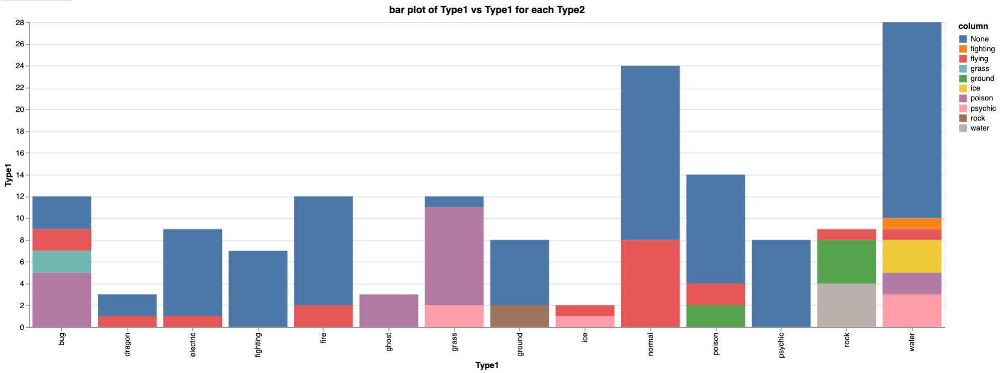
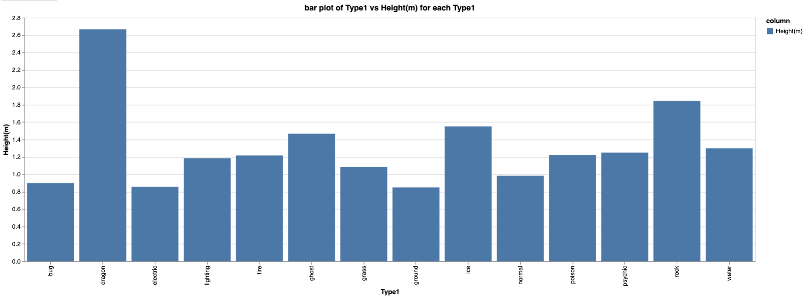
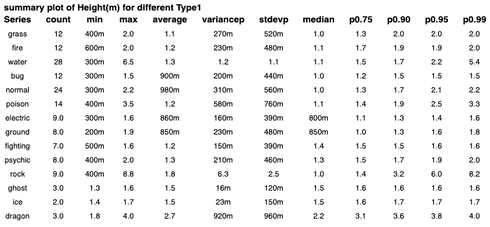

Using grapher for Exploratory Data Analysis
Table of Contents
1 What is grapher?
It is a tool that I wrote to do EDA (Exploratory data analysis) on HTML tables. My work involed running queries on a web application which returned results as a HTML table, and then using the data to do the analysis. A raw way of handling data was to craft queries in an investigative manner - i.e I would write a very general query to fetch the data from a database, and then use fitlers and expressions to continue the analysis. The advantage of grapher is that it aims to reduce some of the efforst by providing common features used during data analysis, filtering, grouping and graphing data. It has helped me to analyse data in an innovative way. The aim of the grapher bookmarklet is to give some power to the user to be able to work with raw html table data, if there are no charting tools available in the website.
Grapher depends on the vega-lite library, which simplies the work of graphing data. More details on the tools are at https://vega.github.io/vega-lite/
Vega-Lite is a high-level grammar of interactive graphics. It provides a concise, declarative JSON syntax to create an expressive range of visualizations for data analysis and presentation.
The source code of grapher and friends and it's usage is at https://github.com/abhi-bops/bookmarklets .
2 How can I use grapher
Here I will share some examples on how to use grapher for making analysis, it will use data from https://www.kaggle.com/dizzypanda/gen-1-pokemon . A database of Pokemons from the first generation (Ah! childhood memories :)).
I will show example usage of graphs and interpreting then for doing an exlporatory analysis. The html table page along with the script enabled can be accessed from FirstGenPokemon .
3 Let's play!
Once the page is loaded, you should see control menus on top of the table, showing different knobs of menus and filters. This is the control center for the graph, you can decide what graph you want to be plotted and the settings for the graphs that you want to pass on.

Figure 1: The grapher menu with the graph and data options
3.1 Bar chart
Bar charts are mostly useful if you want to get some information on the categorical columns in the dataset.
Any data that is not numerical is treated as categorical data. Unlike numbers categorical data are not infinite, and lacks order (except Ordered categorical data). They are used as "Dimensions" in the data world to be able to split the datasets, since each categorical data is unique in it's own way.
Let us pick 2 categorical variables for our analysis here, Type1 - which gives the Primary type of the pokemon - if it's environment is grass, rock, water … and Type2 - the secondary type, indicating if it has special abilities to survive in other environments too.
Set the graph options:
- Graph type = bar
- Stacking method = ontop
- Average method = count
Set the data options:
- Index/X-axis = Type1 #We will analysis them column by column
- Values/Y-axis = Type1 #Keep it as same, for our current analysis
- Grouping/Hue = Type1 #Keep it as same, for our current analysis
Click on "Graph table"
The output should include a bar chart show different counts of the pokemons in each Type1 value. Some inferences we can draw

Figure 2: Bar graph showing count of different Type1 (primary types) of pokemons
- There is a large number of "normal" and "water" pokemons.
- There are very few "ice", "ghost", "dragon" pokemons.
Let us extend the analysis further to see how much of different combinations of Type1 and Type2 pokemons exist
Change the data options:
- Grouping/Hue = Type2 #Grouping the data by Type2 will split each bar chart by their Type2 data
Click on "Graph table"
The output should include a bar chart show different counts of the pokemons in each Type1 value with the bar split by their Type2 values. Some inferences we can draw

Figure 3: Bar graph showing count of different Type1 pokemons split by their Type2 (secondary type)
- There are multiple types of water pokemons (psychic, poison, ice, flying, fighting, None - no special type)
- Ghost pokemons are all poisonous
Now, let's use one of the continous data, Height(m) to see how the heights on average is among different type1 pokemons
Change the data options:
- Values/Y-axis = Height(m)
- Grouping/Hue = Type1
Change the graphing options:
- Aggregate method = 'average'
Click on "Graph table"
The output should include a bar chart show the average heihg of each Type1 pokemon. Some inferences we can draw

Figure 4: Bar graph showing average heights (in m) of different Type1 pokemons
- dragon type1 pokemon tend to be on an average taller than the rest.
- ground type1 pokemon tend to be on an average shorter than the rest, but closely followed by electric.
If we want to know more statisical summaries of the data, with the same settings, we will set the "Graph Type=" as "summary", and it will give a table of commonly used summaries like median, percentiles.

Figure 5: Satistical summary of height values of different Type1 pokemons